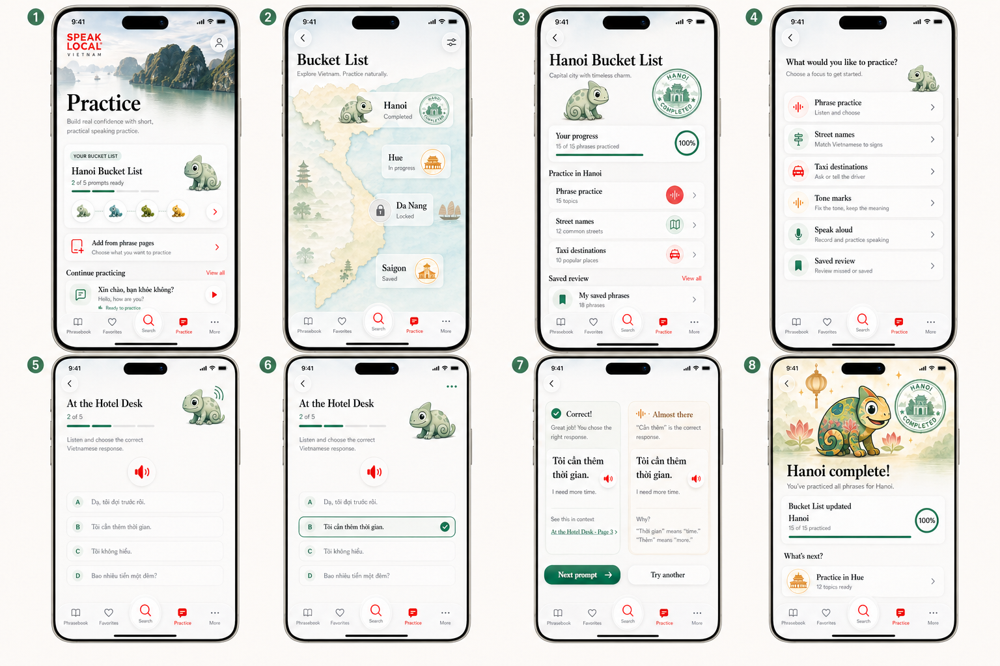
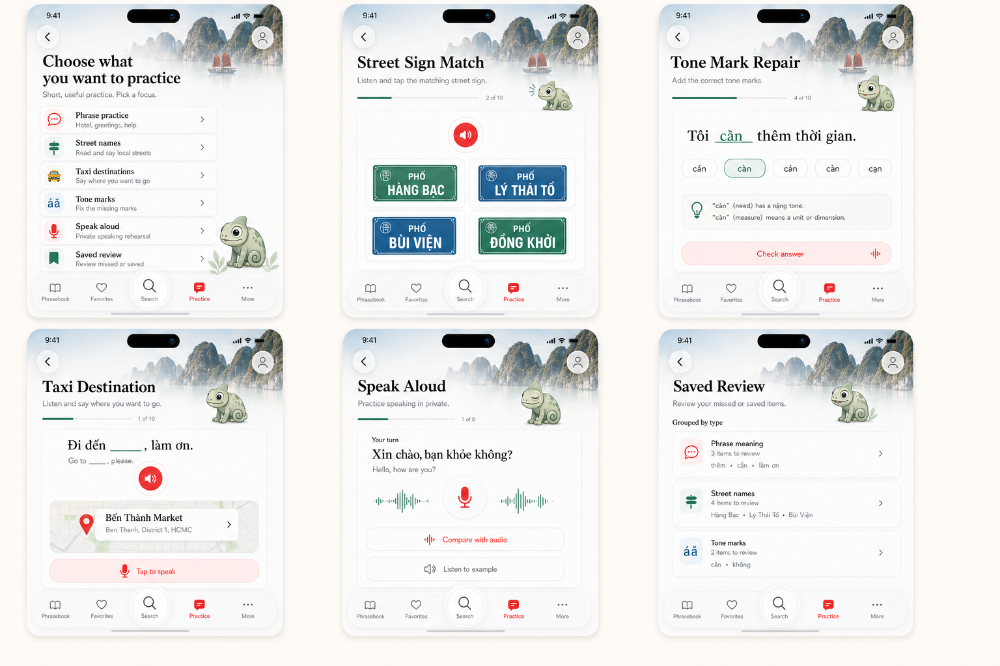
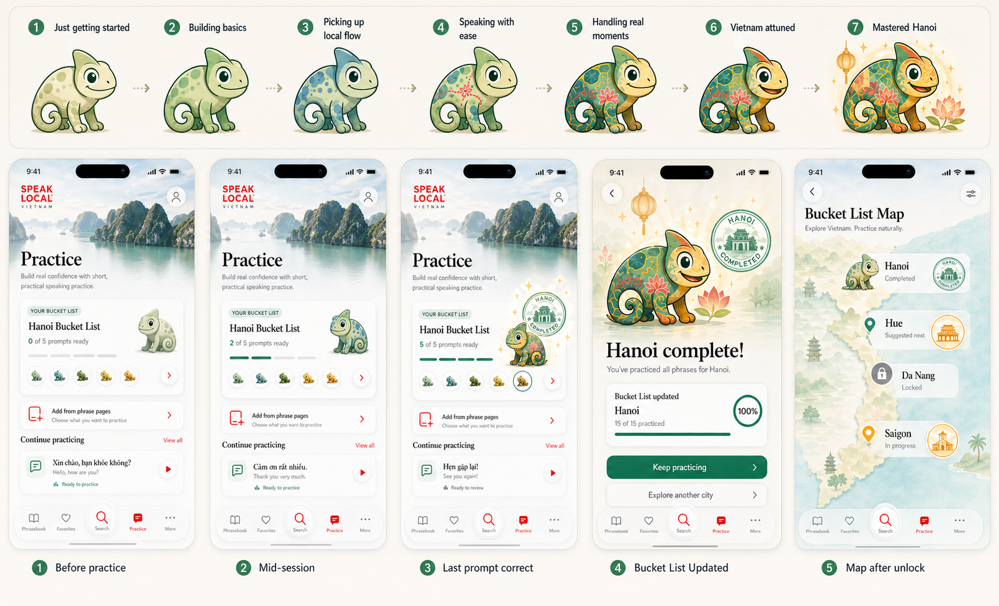

Melo Practice Flow Image Storyboards
Image-only design sheets for the Speak Local Vietnam Practice experience. These are rendered visual references for review and future illustration/native handoff, not a functional prototype.
Practice Flow Overview
Eight-screen storyboard from Practice home through city detail, quiz states, feedback, and completion.

Practice Mode Screens
Mode-level image concepts for phrase practice, street signs, tone marks, taxi destination rehearsal, speak aloud, and saved review.

Melo Progression And Unlock
More dramatic seven-stage Melo progression plus the Hanoi Bucket List completion moment and next-city map state.

Animation Reference
Existing animation board kept as the pose reference for idle, listening, checking, correct, correction, and Bucket List update states.

Tail lock: Melo's tail should attach naturally to the rear base, taper into an open inward curl toward the belly, and avoid any wheel, ring, bullseye, disk, or detached spiral silhouette in every future prompt and commissioned illustration.